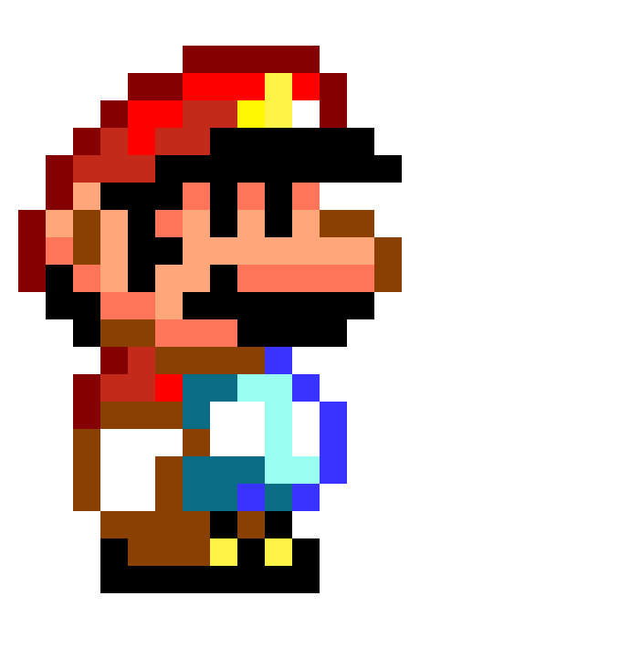
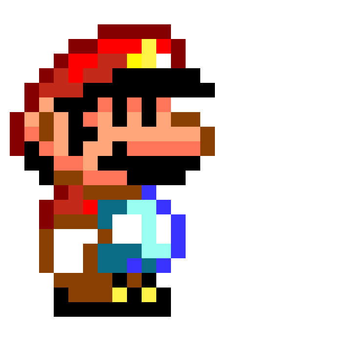

Once upon a time, Mario was feeling stuck in his career as a plumber. He wanted to explore new opportunities
and learn new skills. One day, he stumbled upon a website called "Machine Learning Mastery" and became
interested in learning more about the world of machine learning.
At first, Mario found the website to be overwhelming. There were so many complex concepts and technical
jargon that he didn't underst and. But he was determined to learn, so he started with the beginner's section and
worked his way up.
As he progressed through the website, Mario learned about different types of machine learning algorithms,
such as supervised and unsupervised learning. He also learned about how to use programming languages like
Python to create machine learning models.
Mario spent hours reading articles, watching tutorials, and working on coding exercises. He was fascinated by
the possibilities of machine learning and how it could be used to solve real-world problems.
After several weeks of studying, Mario felt confident enough to start experimenting with his own machine
learning projects. He used his knowledge to build a predictive model that could help him determine when a pipe
might burst based on certain factors like age and pressure.
With his newfound skills, Mario was able to take his plumbing business to the next level. He could now offer
predictive maintenance services to his clients, helping them avoid costly repairs and downtime.
Mario's journey with "Machine Learning Mastery" had not only expanded his skillset but also opened up new
doors for his career. He was grateful for the opportunity to learn and grow, and he looked forward to seeing
where his newfound knowledge would take him.
How I become dumb to smart (My past)
 
